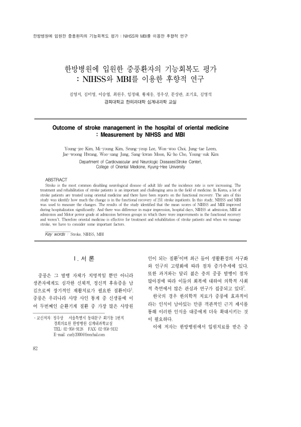

한방병원에 입원한 중풍환자의 기능회복도 평가 : NIHSS와 MBI를 이용한 후향적 연구
Kim Yj, Kim My, Lee Sy, Choi Ww, Leem Jt, Hwang Jw, Jung Ws, Moon Sk, Cho Kh, Kim Ys
The Journal of Internal Korean Medicine 82-87

첫 장 · 오픈액세스First page · open access
논문 소개Summary
한방병원에 입원해 치료받은 중풍환자 251명의 기록을 후향적으로 살펴, 입원 기간에 기능이 얼마나 회복되었는지 확인했습니다. 평균 연령은 61.8세, 평균 입원 기간은 25.6일이었습니다. NIHSS는 5.55점에서 4.41점으로 낮아지고 MBI는 60.63점에서 70.10점으로 높아져 두 지표 모두 유의하게 좋아졌습니다(p<0.001). 호전된 군은 그렇지 않은 군보다 뇌출혈 환자의 비율이 높고 입원 기간이 길었으며 입원 당시 기능이 더 떨어져 있었습니다. 점수가 많이 올랐어도 퇴원 시점의 기능은 처음부터 상태가 나았던 군에 미치지 못했습니다. 대조군이 없는 관찰 기록이라 치료 효과를 가려낸 연구는 아닙니다.
A retrospective review of 251 stroke inpatients treated at a Korean medicine hospital, asking how much function recovered during admission. Mean age was 61.8 years and the mean stay 25.6 days. NIHSS fell from 5.55 to 4.41 and the Modified Barthel Index rose from 60.63 to 70.10, both significant (p < 0.001). Those who improved more often had haemorrhagic stroke, stayed longer, and were more impaired on admission; despite larger gains, their function at discharge still did not reach that of the group that started out better. With no control group, the study describes the course of care rather than isolating a treatment effect.
인용Cite
Kim Yj, Kim My, Lee Sy, Choi Ww, Leem Jt, Hwang Jw, Jung Ws, Moon Sk, Cho Kh, Kim Ys. 한방병원에 입원한 중풍환자의 기능회복도 평가 : NIHSS와 MBI를 이용한 후향적 연구. The Journal of Internal Korean Medicine. 2008:82-87.